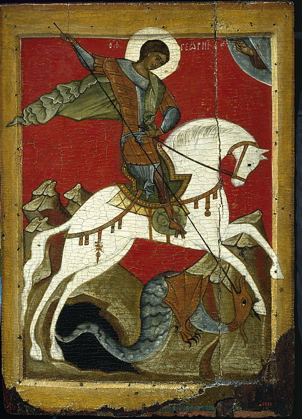

Георгий Победоносец — святой, великомученик, один из самых почитаемых в России святых. Согласно греческим сказаниям, Георгий родился в III веке в Бейруте у подножия Ливанских гор. Его родителями были воин Геронтий и Полихрония, владелица богатых земель. Когда отец умер, семья стала жить в Лидде. Там Георгий поступил на службу. Все знали его как доблестного воина, умного и храброго. Он стал тысяченачальником. Его очень любил император Диоклетиан. Когда юноше было 20 лет, его мать умерла. Он получил богатое наследство и решил служить при дворе, чтобы иметь в обществе высокое положение. В это время начались гонения христиан. В Никомидии Георгий отдал все свои деньги бедным. Перед лицом императора он объявил себя христианином. Император приказал его арестовать. Георгия подвергли пыткам. Когда Георгия толкали в темницу железными копьями, одно из них сломалось, словно спичка. Тогда его привязали к столбу, и на грудь ему поместили тяжелый камень. На второй день его пытали колесом, мечами и ножами. Георгий лежал бездыханный, но явился ангел, которого он приветствовал по-военному, и все поняли, что он ожил, и все раны заживились. В яме с негашеной известью Георгий остался жив. На 4 день ему переломали кости на руках и ногах, а на другой день они были целы. На ноги Георгию надели раскаленные сапоги из железа. Он молился всю ночь, и утром перед императором стоял невредим. Он был побит плетьми так, что со спины слезла кожа. Но утром он снова был цел и невредим. В 7 день ему приготовили снадобья. Одна чаша должна была лишить его рассудка, другая — умертвить. Но это не подействовало на Георгия. После пыток он воскресил умершего человека и оживил вола. Все это так подействовала на многих людей, что они решили тоже стать христианами. На 8 день его уговаривали отречься от Христа, но он остался верен христианству. Тогда Диоклетиан решил казнить его. В ночь перед казнью Георгию приснился Спаситель с золотым венцом на голове. Он сказал, что Георгия ждет Рай. Тот позвал слугу, передал ему сказанные слова и попросил похоронить его в Палестине. Диоклетиан спустился в темницу, чтобы уговорит в последний раз Георгия отказаться от Христа. Тот попросил посетить храм Апполлона. После речи в храме и крестного знамения, которым он озарил себя и статую, бес, который жил в статуе, объявил себя падшим ангелом, и все идолы храма рухнули. Разозленные жрецы стали бить Георгия. Внезапно вбежала жена императора, которая на коленях просила святого простить мужу его грехи. В этот момент она стала христианкой. Император приказал убить обоих. В этот день мученическую смерть приняли Георгий и Александра Римская, царица. Георгию было всего около 28 лет.